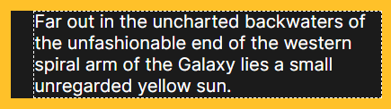
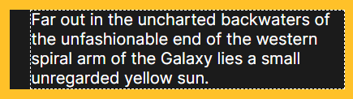

CSS Padding
1. Padding inline
The padding-inline CSS shorthand property defines the logical inline start and end padding of an element, which maps to physical padding properties depending on the element's writing mode, directionality, and text orientation.
Example:
where, 5% : padding-inline-start (shift the text alignment to 5% toward right)
10% : padding-inline-end (shift the text alignment to 10% toward left)
#Padding-inline properties
- padding-inline-start : The padding-inline-start CSS property defines the logical inline start padding of an element (left), which maps to a physical padding depending on the element's writing mode, directionality, and text orientation
- padding-inline-end : The padding-inline-end CSS property defines the logical inline end padding of an element, which maps to a physical padding depending on the element's writing mode, directionality, and text orientation.
Example for padding-inline-start:
 

Where, 20px shift the text toward right
Example for padding-inline-end:
Where, 20px shift the text toward left
2. Padding Block
The padding-block CSS shorthand property defines the logical block start and end padding of an element, which maps to physical padding properties depending on the element's writing mode, directionality, and text orientation.
Example:
where, 5% : padding-block-start (shift the text alignment to 5% toward bottom)
10% : padding-block-end (shift the text alignment to 10% upward )
#Padding-Block properties
- padding-block-start : The padding-block-start CSS property defines the logical block start padding of an element, which maps to a physical padding depending on the element's writing mode, directionality, and text orientation.
- padding-block-end : The padding-block-end CSS property defines the logical block end padding of an element, which maps to a physical padding depending on the element's writing mode, directionality, and text orientation.
Example for padding-block-start:
Where, 20px shift the text toward bottom
Example for padding-block-end:
Where, 20px shift the text upward